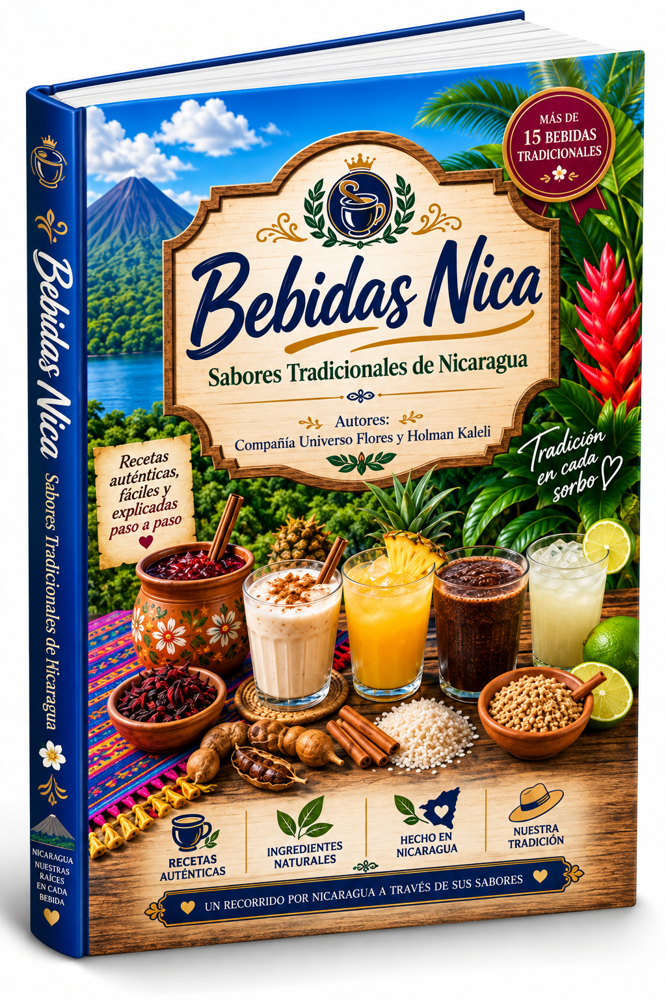
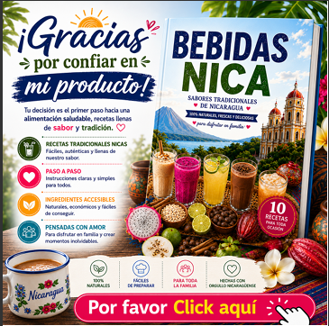

Pinolillo
Una bebida emblemática que nos identifica.
Descubre bebidas tradicionales de Nicaragua y lleva a tu mesa sabores refrescantes, caseros y llenos de identidad.
Una colección digital para conocer y preparar bebidas que forman parte de la tradición nicaragüense. Un formato digital pensado para consultar, disfrutar y compartir.

Una colección digital para conocer y preparar bebidas que forman parte de la tradición nicaragüense. Cada preparación conecta ingredientes, costumbres y recuerdos de nuestra tierra.
Recetas y sabores inspirados en nuestra cultura gastronómica.
Información presentada de forma práctica para consultar desde tus dispositivos.
Ideal para disfrutar en familia y conservar nuestras raíces.
Una selección de bebidas tradicionales para conocer, preparar y compartir.
Una bebida emblemática que nos identifica.
Refrescante, nutritivo y con historia.
Una bebida ancestral de gran tradición.
Un clásico que nunca falta.
El sabor único del cacao nicaragüense.
Aromática y deliciosa.

Al comprar Bebidas Nica, también recibirás el bono promocional preparado para acompañar este recetario de bebidas tradicionales.
El bono mostrado corresponde al producto Bebidas Nica y forma parte de la oferta de compra.
🎁 Comprar y recibir mi bono — US$ 15.00Consulta tu libro desde computadora, tablet o teléfono y vuelve a tus recetas cuando quieras.
Recibe el libro digital y comienza a disfrutar nuestros sabores tradicionales.
Sí. Es un producto digital que se entrega mediante Payhip después de completar la compra.
Sí. Puedes acceder al archivo digital desde dispositivos compatibles con el formato entregado por Payhip.
Presiona cualquiera de los botones de compra y serás dirigido al checkout de Payhip, donde verás las opciones disponibles.
Sí. El encabezado y el pie de página permiten regresar a Flores Universo.
Conservemos nuestras raíces a través de los sabores que compartimos.